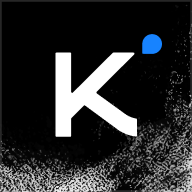
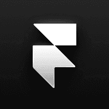
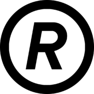
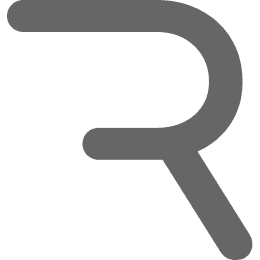
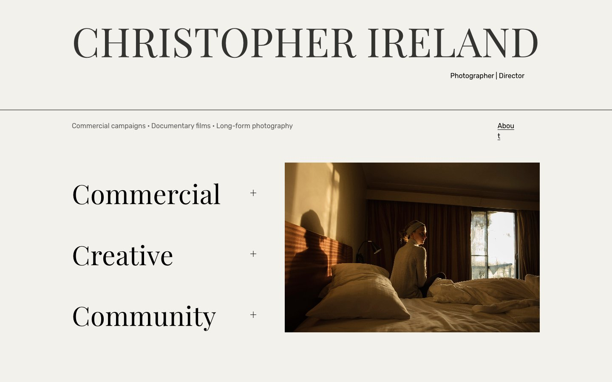
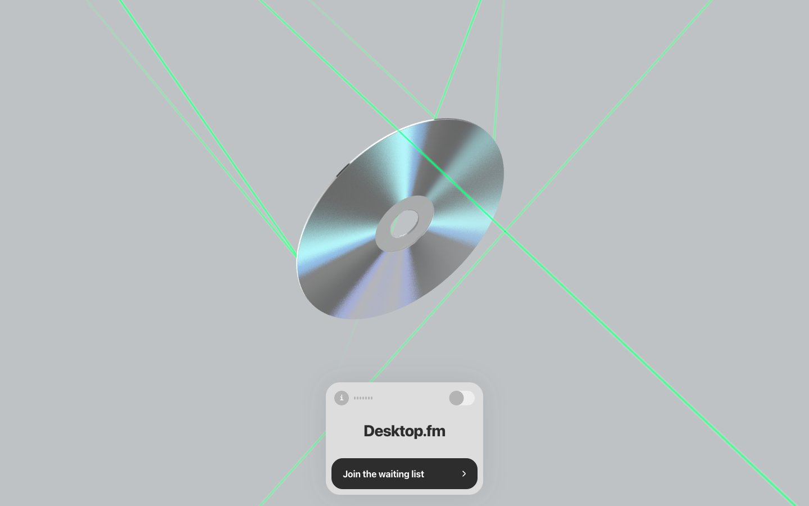

工具这么多，模型一直在变强，
为什么我做出来的东西，
还是很普通？








你说「高级」，AI 只能猜




不用会设计，只要会指认
顶级的品味已经在顶级产品里，AI 都看过。你要做的，是指给它看是哪一个。
找参照
按用户的动作去搜，找到三五张真实产品的截图，每张写一句它值得借鉴的地方。
定风格
整个产品像谁？从 17 种风格里挑一张气质最接近的，当作锚点。
写成规则
把参照拆成九条可以检查的规则，写成文件，之后每次生成都照着它。


① 找参照：按用户的动作搜，不按品类搜
| 我实际输入的搜索词（Refero MCP，09/23） | 搜到的 |
|---|---|
| approve payment request confirmation with amount and limit | Uber Eats · Shopify · Airbnb 的支付方式页，按品类搜，拿到的也只是品类 |
| review transfer confirmation … before sending money | Revolut 和 Wise 的转账复核屏，正是批准前让人看清后果的那一步 |
挑选的标准不是哪个好看，而是哪个最接近我的用户正在做的事。
前提是已连上 Refero MCP（需要付费的 Pro / Team / Lifetime 账号，并完成浏览器授权；价格以官网为准）。接入方式：Claude → 设置 → Connectors 添加 Refero；Cursor 和 Claude Code 用 MCP 配置。
没有账号的话，可以打开网页版同样按动作手动搜；也可以把 Prompt 里的「用 Refero MCP 搜」换成「我附上 3 张截图」，自己截 Revolut 或 Wise 的确认页贴进去。
点击放大点击放大 点击放大
点击放大③ 写成规则：你给参照和三个回答，AI 写出九条规则
参照：04 Compound
心情：有点紧张
像：不说废话的私人银行家
绝不能像：赌场、AI 模板
2 形状 圆角 12–16 · 线多于面
3 字体 Jakarta 600 · Inter · Mono 数字
4 色彩 #007FFF 只给主操作 · #A78BFA 只给 Agent
5 密度 一屏只有一个决定
6 层次 字号 + 1px 边框 · 阴影只给浮层
7 动效 150/240/360/500ms · 只在状态变化时动
8 图像 无插画人物 · Lucide 1.5px
9 禁止 渐变按钮 · emoji · 装饰 3D · 标语 …
「层级靠尺寸与留白，不靠颜色。」
「整屏只有一个蓝色，给最重要的那个动作。」
「数字最大，其余都退后。」
像那个人就继续，不像就换一张。
「我是主理人」官网：在 Cowork 里直接出画布
 点击放大
点击放大
 点击放大
点击放大
用了什么工具
- Claude Cowork + /design：在对话里调用，产出直接是 Claude Design 画布
- Google Drive 连接器读 39 页 deck 全文；Chrome 逐个路由走查现站
- general-purpose agent 负责构建，Playwright 截图自查
- Figma MCP 画主视觉，再回写到网站首屏
给了什么 Prompt
三层：我写的 22 KB 设计 Brief；启动 agent 的 300 字委派指令（下面这段）；给 Mkt 那边 AI 的改造 Prompt。
产出了什么
- 画布 3 个画板：桌面可交互整站 1440×7600、手机 390、主视觉 1920×1080
- 独立 index.html + kv.html + README（DOM 与交互对照表）
- DESIGN.md 240 行：token、层级、材质、禁用清单、自查表
- AI_PROMPT_改造现站.md：分内容、UI、功能三轮，附十条验收
用的时候要注意
- 画布文件（.dc.html）双击打不开，发给同事前要转成独立 HTML
- PNG / PDF 导出不嵌 Google Fonts，正式物料从 Figma 出
- 两人同时编辑会冲突，后保存的会被拉回前者的版本，适合一人主编
- AI 会把示例数据和猜的日期写得像事实：要求它标注，没定的留空
世界杯 HyperAgent：设计导出，交给工程师的 AI
 点击放大
点击放大
 点击放大
点击放大
用了什么工具
- Claude Design：项目「world cup win with imToken」，所有界面都在这里做
- Weavy：跑出 8 个球员剪影和鲸鱼吉祥物姿态，风格统一
- 工程侧：Ben 用 Claude 读懂导出文件，Claude Code 接后端
- Vercel 部署，Discord 群里发链接
给了什么 Prompt
一份 Primer 贴在每次对话最前面，后面接单屏需求。Primer 叠了三层：v2（产品、参照、双主题 token）、Supplement、Visual Refresh（Azure 主色、玻璃材质、动效 < 250ms）。
产出了什么
- app/：15 个 JSX 组件 + tokens.css（双主题语义 token）+ data.js
- WC2026 HyperAgent - Offline.html：5.9 MB 离线单文件，双击就能看
- Audit & Plan：它自己查出 18 条问题，按 P0–P3 分四期修
- Data Interface Spec：实体、接口、原型字段到正式接口的对照
用的时候要注意
- 原型里的字段名就是接口契约：写进文档，工程照用，UI 不用返工
- 导出前先清理：没被引用的旧文件会误导对方的 AI，先移到 archive
- Primer 和绑定的设计系统冲突时，它会自己挑一个；审计把这条列成待决问题，要你拍板
- 截图看不出的问题要让它实际去点：主题切换后文字颜色残留、手机上横向溢出，都是点过才发现的
Portfolio D：写代码途中，转去 Claude Design 探索
 点击放大
点击放大
 点击放大
点击放大
用了什么工具
- Claude Code CLI：在 alpha.token.im repo 里工作，起点和终点都在这里
- Claude Design：「Cross-chain Send」项目里的 Portfolio D.html
- Send to Claude Code：把设计稿和 mock 数据送回 repo
- repo 自带的 AGENTS.md、DESIGN.md 约束实现
给了什么 Prompt
两份：给 Claude Design 的 Brief · Token Universe 2.0（8 条改动 + 自洽的 mock 数据）；给 Claude Code 的主 Prompt，分硬约束、起点假设和 DIVERGENCE 协议。
产出了什么
- design-reference/portfolio-d/：原始 JSX、CSS、mock 数据
- 同目录 README：写明这是只读参考，不能直接 import，以及怎么对接 repo 的类型
- playground 变体 TokenUniverseVariant，之后进入正式功能 features/portfolio-universe
- 按天拆好的提交：数据模型、卡片、审计、验证各一条
用的时候要注意
- 送回来的是参考，不是代码：CSS 里 6 个裸色值不在 repo 色板里，要先加成语义 token
- Claude Design 不知道 repo 的规矩，回到 repo 以 AGENTS.md 为准
- 首版会混进不该有的东西：Speculative、YOUR STAKE、第三方 Earn 按钮都在 v1 里，靠评审抓出来写进 Brief
- 让 Claude Code 偏离方案前先停下：用 DIVERGENCE 表列出想改什么、为什么，等你裁决